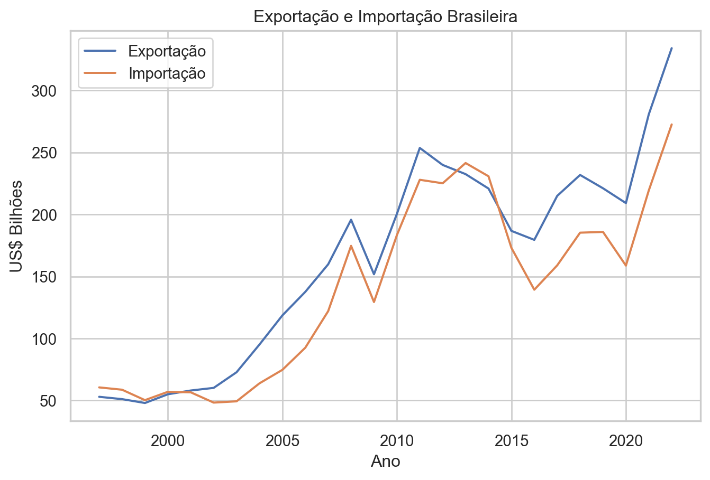

import pandas as pd
import os
import shutil
from urllib.request import urlopen
from bs4 import BeautifulSoup
import re
import pyarrow as pa
import pyarrow.parquet as pq
import pyarrow.dataset as ds
import duckdb
import seaborn as sns
import matplotlib.pyplot as plt
# avoid ssl verification error
import ssl
ssl._create_default_https_context = ssl._create_unverified_contextDados de comércio exterior do Brasil com Arrow e Duckdb
Baixe a base completa e faça consultas localmente
python
Dados
Introdução
Este post apresenta um exemplo resumido de como:
- É posssível baixar a base completa de dados de comércio exterior;
- Salvar os arquivos no formato parquet;
- Usar o duckdb para fazer consultas SQL.
Bibliotecas
Abaixo, estão listadas as bibliotecas utilizadas neste post.
Criação das pastas
O código abaixo cria as pastas que irão salvar os arquivos originais e a base de dados no formato parquet.
if not os.path.exists("secex_db"):
os.mkdir("secex_db")
os.mkdir("secex_db/csvs")
os.mkdir("secex_db/parquet")Download dos dados
O próximo chunk de código lê a página que contém os links para os arquivos da base de dados e filtra apenas os arquivos que contém os dados de exportação e importação. Um detalhe importante é que esta página disponibiliza um arquivo completo para cada fluxo (exportação e importação). Contudo, o código abaixo extrai os links para os arquivos de cada separadamente.
Veja este link para conhecer todos os dados disponibilizados pela Secretaria de Comércio Exterior.
url = "https://www.gov.br/produtividade-e-comercio-exterior/pt-br/assuntos/comercio-exterior/estatisticas/base-de-dados-bruta"
html = urlopen(url)
soup = BeautifulSoup(html, "html.parser")
links = soup.find_all("a", href=True)
links = [
link["href"] for link in links if re.search(r"(EXP|IMP)_[0-9]{4}.csv", link["href"])
]
links[:5]['https://balanca.economia.gov.br/balanca/bd/comexstat-bd/ncm/EXP_1997.csv',
'https://balanca.economia.gov.br/balanca/bd/comexstat-bd/ncm/EXP_1998.csv',
'https://balanca.economia.gov.br/balanca/bd/comexstat-bd/ncm/EXP_1999.csv',
'https://balanca.economia.gov.br/balanca/bd/comexstat-bd/ncm/EXP_2000.csv',
'https://balanca.economia.gov.br/balanca/bd/comexstat-bd/ncm/EXP_2001.csv']Para cada link, o arquivo csv para cada fluxo e ano é baixado e salvo na pasta secex_db/csvs.
for link in links:
file_name = link.split("/")[-1]
file_path = os.path.join("secex_db/csvs", file_name)
if not os.path.exists(file_path):
with open(file_path, "wb") as f:
f.write(urlopen(link).read())Para checagem, abaixo listamos o nome de cinco arquivos baixados.
csvs = os.listdir("secex_db/csvs")
csvs[:5]['EXP_1997.csv',
'EXP_1998.csv',
'EXP_1999.csv',
'EXP_2000.csv',
'EXP_2001.csv']Leitura dos arquivos csv
Com os dados já baixados, o próximo passo será ler os arquivos csv e salvar no formato parquet. Para isso, utilizaremos o pacote pyarrow.
# Limpa as pastas caso já existam arquivos criados
if os.path.exists("secex_db/parquet/EXP/"):
for folder in os.listdir("secex_db/parquet/EXP/"):
shutil.rmtree(f"secex_db/parquet/EXP/{folder}")
if os.path.exists("secex_db/parquet/IMP/"):
for folder in os.listdir("secex_db/parquet/IMP/"):
shutil.rmtree(f"secex_db/parquet/IMP/{folder}")
for csv in csvs:
df = pd.read_csv(
filepath_or_buffer=f"secex_db/csvs/{csv}",
sep=";",
encoding="latin-1",
low_memory=False,
dtype={
"CO_ANO": "int16",
"CO_MES": "int16",
"CO_NCM": "string",
"CO_UNID": "string",
"CO_PAIS": "string",
"SG_UF_NCM": "string",
"CO_VIA": "string",
"CO_URF": "string",
"QT_ESTAT": "float32",
"KG_LIQUIDO": "float32",
"VL_FOB": "float32",
},
)
if "EXP" in csv:
pq.write_to_dataset(
pa.Table.from_pandas(df),
root_path="secex_db/parquet/EXP/",
partition_cols=["CO_ANO"],
)
else:
pq.write_to_dataset(
pa.Table.from_pandas(df),
root_path="secex_db/parquet/IMP/",
partition_cols=["CO_ANO"],
)Arrow datasets
Com os arquivos salvos no formato parquet, podemos criar os datasets do pyarrow para cada fluxo (exportação e importação). Um ponto importante do dataset é que ele permite trabalhar com dados que podem ser maiores do que a memória disponível no seu computador. Ao abrir o dataset, o pyarrow apenas irá mapear a estrutura dos dados, sem carregá-los na memória.
exp_ds = ds.dataset("secex_db/parquet/EXP", format="parquet", partitioning="hive")
exp_ds.schemaCO_MES: int16
CO_NCM: string
CO_UNID: string
CO_PAIS: string
SG_UF_NCM: string
CO_VIA: string
CO_URF: string
QT_ESTAT: float
KG_LIQUIDO: float
VL_FOB: float
CO_ANO: int32
-- schema metadata --
pandas: '{"index_columns": [{"kind": "range", "name": null, "start": 0, "' + 1515imp_ds = ds.dataset("secex_db/parquet/IMP", format="parquet", partitioning="hive")
imp_ds.schemaCO_MES: int16
CO_NCM: string
CO_UNID: string
CO_PAIS: string
SG_UF_NCM: string
CO_VIA: string
CO_URF: string
QT_ESTAT: float
KG_LIQUIDO: float
VL_FOB: float
VL_FRETE: int64
VL_SEGURO: int64
CO_ANO: int32
-- schema metadata --
pandas: '{"index_columns": [{"kind": "range", "name": null, "start": 0, "' + 1743Realizando consultas
A biblioteca duckdb permite realizar consultas SQL diretamente nos datasets do Arrow. O duckdb irá fazer uma integração com o Arrow sem a necessidade copiar os dados. Para mais detalhes, veja este post.
Exemplo 1: Obtendo os totais de exportação e importação por ano
Cria a conexão com o duckdb.
con = duckdb.connect()No código seguinte, é apresentado como é simples realizar consultas nos datasets exp_ds e imp_ds. As consultas abaixos calculam os totais exportados e importados em US$ Bilhões até o ano de 2022.
total_exp = con.execute(
"""SELECT CO_ANO, SUM(VL_FOB / 1E9) AS TOTAL_EXP_BI FROM exp_ds
WHERE CO_ANO <= 2022
GROUP BY CO_ANO"""
).fetch_df()
total_imp = con.execute(
"""SELECT CO_ANO, SUM(VL_FOB / 1E9) AS TOTAL_IMP_BI FROM imp_ds
WHERE CO_ANO <= 2022
GROUP BY CO_ANO"""
).fetch_df()Os dados são combinados em um dataframe único e printados na tabela abaixo.
total_exp_imp = (
total_exp.merge(total_imp, on="CO_ANO")
.sort_values(by="CO_ANO")
.reset_index(drop=True)
)
total_exp_imp| CO_ANO | TOTAL_EXP_BI | TOTAL_IMP_BI | |
|---|---|---|---|
| 0 | 1997 | 52.947496 | 60.537962 |
| 1 | 1998 | 51.076604 | 58.672861 |
| 2 | 1999 | 47.945909 | 50.259540 |
| 3 | 2000 | 54.993160 | 56.976350 |
| 4 | 2001 | 58.032294 | 56.569020 |
| 5 | 2002 | 60.147158 | 48.274764 |
| 6 | 2003 | 72.776747 | 49.307163 |
| 7 | 2004 | 95.121672 | 63.813637 |
| 8 | 2005 | 118.597835 | 74.692216 |
| 9 | 2006 | 137.581151 | 92.531097 |
| 10 | 2007 | 159.816384 | 122.041949 |
| 11 | 2008 | 195.764624 | 174.707088 |
| 12 | 2009 | 151.791674 | 129.397612 |
| 13 | 2010 | 200.434135 | 183.336965 |
| 14 | 2011 | 253.666310 | 227.969757 |
| 15 | 2012 | 239.952538 | 225.166426 |
| 16 | 2013 | 232.544256 | 241.500886 |
| 17 | 2014 | 220.923237 | 230.823019 |
| 18 | 2015 | 186.782355 | 173.104259 |
| 19 | 2016 | 179.526129 | 139.321358 |
| 20 | 2017 | 214.988108 | 158.951444 |
| 21 | 2018 | 231.889523 | 185.321984 |
| 22 | 2019 | 221.126807 | 185.927968 |
| 23 | 2020 | 209.180242 | 158.786825 |
| 24 | 2021 | 280.814577 | 219.408049 |
| 25 | 2022 | 334.136038 | 272.610687 |
sns.set(rc={"figure.figsize": (8, 5)})
sns.set_theme(style="whitegrid")
sns.lineplot(data=total_exp_imp, x="CO_ANO", y="TOTAL_EXP_BI", label="Exportação")
sns.lineplot(data=total_exp_imp, x="CO_ANO", y="TOTAL_IMP_BI", label="Importação")
plt.xlabel("Ano")
plt.ylabel("US$ Bilhões")
plt.title("Exportação e Importação Brasileira")
plt.show()
Exemplo 2: Principais produtos (códigos NCM) exportados em 2022
Neste exemplo, iremos obter os 10 principais produtos exportados pelo Brasil em 2022. Como o dataset exp_ds guarda apenas os códigos, iremos ler a tabela de correlação que está disponível na mesma página que disponibiliza os dados de exportação e importação. A tabela de correlação pode ser acessada aqui.
tabela_ncm = pd.read_csv(
"https://balanca.economia.gov.br/balanca/bd/tabelas/NCM.csv",
sep=";",
encoding="latin-1",
dtype={"CO_NCM": "string"},
)O código abaixo converte o dataframe tabela_ncm para uma tabela do Arrow, o que irá permitir a realização de um join com o dataset exp_ds.
ncm_table = pa.Table.from_pandas(tabela_ncm)
ncm_table.schemaCO_NCM: string
CO_UNID: int64
CO_SH6: int64
CO_PPE: double
CO_PPI: double
CO_FAT_AGREG: double
CO_CUCI_ITEM: string
CO_CGCE_N3: int64
CO_SIIT: double
CO_ISIC_CLASSE: int64
CO_EXP_SUBSET: double
NO_NCM_POR: string
NO_NCM_ESP: string
NO_NCM_ING: string
-- schema metadata --
pandas: '{"index_columns": [{"kind": "range", "name": null, "start": 0, "' + 1914(
con.execute(
"""SELECT exp_ds.CO_NCM, NO_NCM_POR, SUM(VL_FOB / 1E9) AS TOTAL_EXP_BI
FROM exp_ds
JOIN ncm_table ON exp_ds.CO_NCM = ncm_table.CO_NCM
WHERE CO_ANO = 2022
GROUP BY exp_ds.CO_NCM, NO_NCM_POR
ORDER BY TOTAL_EXP_BI DESC
LIMIT 10"""
).fetch_df()
)| CO_NCM | NO_NCM_POR | TOTAL_EXP_BI | |
|---|---|---|---|
| 0 | 12019000 | Soja, mesmo triturada, exceto para semeadura | 46.553260 |
| 1 | 27090010 | Óleos brutos de petróleo | 42.553764 |
| 2 | 26011100 | Minérios de ferro e seus concentrados, exceto ... | 25.734248 |
| 3 | 10059010 | Milho em grão, exceto para semeadura | 12.072360 |
| 4 | 02023000 | Carnes desossadas de bovino, congeladas | 10.916696 |
| 5 | 27101922 | Fuel oil | 10.319564 |
| 6 | 17011400 | Outros açúcares de cana | 9.528719 |
| 7 | 09011110 | Café não torrado, não descafeinado, em grão | 8.511689 |
| 8 | 47032900 | Pastas químicas de madeira, à soda ou ao sulfa... | 7.677711 |
| 9 | 23040090 | Bagaços e outros resíduos sólidos, da extração... | 7.538183 |
Considerações finais
Neste post, apresentamos, utilzando a base de dados de comércio exterior do Brasil, como é possível realizar consultas SQL em datasets do Arrow. A biblioteca duckdb permite realizar consultas SQL diretamente nos datasets do Arrow.